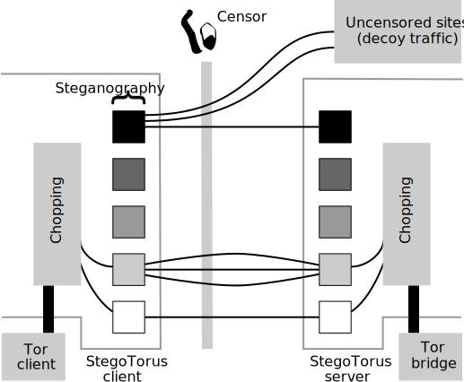
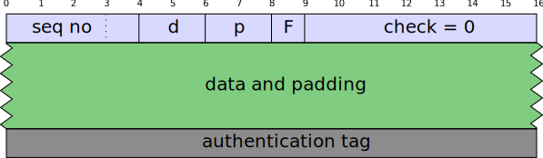
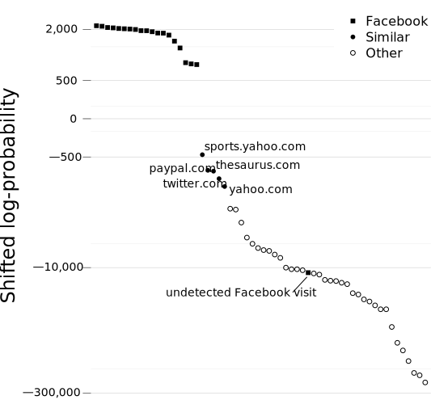

StegoTorus:
Zachary Weinberg · Jeffrey WangCMU · SRI International · Stanford
Tor and Censorship
The Onion Router (Tor)
Tor and Censorship
Any of these routers could be eavesdropping
Tor and Censorship
The censor , an adversary in this position,
StegoTorus
Disguise Tor traffic as an innocuous cover
protocol
Stegotorus’ Mission
Protect bulk Tor traffic from deep-packet inspection and
blockade
… hide it, steganographically, in commonplace Internet
protocols
… obscure packet contents, size, and timing
… maintain Tor’s anonymity properties and performance
About steganography
Hide a hiddentext in a covertext ; an adversary
shouldn’t be able to tell that the hiddentext is present
The covertext conforms to some standard file format
State of the art is weaker than for cryptography
theoretically-secure designs are not yet practical
deployed designs can all be broken by a determined
adversary
hiddentext must be entirely indistinguishable
from random bits
DEFIANCE: the larger system
StegoTorus defends against packet inspection
Other components provide IP-blocking resistance, preshared
keys, protection from active probes and directory scraping,
etc.
More details: Lincoln et al. , FOCI’12
Limits on the Censor
Doesn’t install spyware on users’ computers
Doesn’t operate Tor relays
Wishes to avoid collateral damage
Has to make decisions at backbone scale
must ignore nearly all traffic
must detect “interesting” traffic with minimal CPU effort
must err on the side of missing things
StegoTorus Architecture

Chopping

The Tor stream is not a good hidden protocol as is
Plaintext record headers
Fixed-size “cells”
Must be delivered in order
Chopping reformats the stream to solve these issues
Can be used by itself
Think of it as a custom rebuild of TLS and TCP
Two particularly hard design problems
Hard problem 1
Must know length to decrypt; must decrypt length
Encrypted, unauthenticated data leads to
Solution: separate key for header, short-message AE
Handshakes
Create new Tor links
Pre-shared server public key
Special asymmetric cipher for initial key agreement
ECDH (fixed curve) for session key agreement
Associate new connections with established Tor links
Same asymmetric cipher as initial key agreement
Needed to multiplex a Tor link over many cover-protocol
connections
Hard problem 2
No standard asymmetric cipher produces pseudorandom ciphertexts
We use Bodo
Möller’s proposed cipher from ESORICS 2004
First production implementation of this cipher (to our
knowledge)
Only good for initial key agreement
Produces 163-bit messages
Intrinsic timing attack
Steganography
Implemented:
Arbitrary encrypted packet stream (“embed”)
HTTP (JS, Flash, PDF)
Planned:
Skype, RTMP, WoW?
More HTTP content types
Arbitrary encrypted packet stream
17 03 01 00 6B XX XX XX XX XX XX XX XX XX XX XX
XX XX XX XX XX XX XX XX XX XX XX XX XX XX XX XX
XX XX XX XX XX XX XX XX XX XX XX XX XX XX XX XX
XX XX XX XX XX XX XX XX XX XX XX XX XX XX XX XX
XX XX XX XX XX XX XX XX XX XX XX XX XX XX XX XX
XX XX XX XX XX XX XX XX XX XX XX XX XX XX XX XX
XX XX XX XX XX XX XX XX XX XX XX XX XX XX XX XX
MM MM MM MM MM MM MM MM MM MM MM MM MM MM MM MM
MM MM MM MM PP
A TLS 1.0 application-data record, with 107 bytes of payload, a
20-byte MAC,
Arbitrary encrypted packet stream
17 03 01 00 6B XX XX XX XX XX XX XX XX XX XX XX
XX XX XX XX XX XX XX XX XX XX XX XX XX XX XX XX
XX XX XX XX XX XX XX XX XX XX XX XX XX XX XX XX
XX XX XX XX XX XX XX XX XX XX XX XX XX XX XX XX
XX XX XX XX XX XX XX XX XX XX XX XX XX XX XX XX
XX XX XX XX XX XX XX XX XX XX XX XX XX XX XX XX
XX XX XX XX XX XX XX XX XX XX XX XX XX XX XX XX
MM MM MM MM MM MM MM MM MM MM MM MM MM MM MM MM
MM MM MM MM PP
A TLS 1.0 application-data record, with 107 bytes of payload, a
20-byte MAC,
Replace XX, MM, PP bytes with chopper output (adversary can’t
check the MAC)
Works from labeled packet captures of TLS streams
Can be adapted to any TCP protocol carrying encrypted data
Not reliable enough to benchmark yet
HTTP client → server
Not much room to smuggle arbitrary data
We use URIs and cookies, base64’d
todo: make them look less fishy Hostname impractical (has to be in the DNS)
GET /<uri> HTTP/1.1
Accept: text/html,application/xhtml+xml,
application/xml;q=0.9,*/*;q=0.8
Accept-Encoding: gzip, deflate
Accept-Language: en-us,en;q=0.5
Connection: keep-alive
Host: <hostname>
User-Agent: Mozilla/5.0 (X11; Linux x86_64;
rv:10.0) Gecko/20100101 Firefox/10.0
Cookie: <cookie>
HTTP server → client: JavaScript
JavaScript on the wire looks like this →
Overwrite identifiers with hiddentext, encoded in modified
base64
(function(a,b){function cy(a){return f.isWindow(a)?a:
a.nodeType===9?a.defaultView||a.parentWindow:!1}funct
ion cv(a){if(!ck[a]){var b=c.body,d=f("<"+a+">").appe
ndTo(b),e=d.css("display");d.remove();if(e==="none"||
e===""){cl||(cl=c.createElement("iframe"),cl.frameBor
der=cl.width=cl.height=0),b.appendChild(cl); if(!cm||
!cl.createElement)cm=(cl.contentWindow||cl.contentDoc
ument).document,cm.write((c.compatMode==="CSS1Compat"
?"<!doctype html>":"")+"<html><body>"),cm.close();d=c
m.createElement(a),cm.body.appendChild(d),e=f.css(d,"
display"),b.removeChild(cl)}ck[a]=e}return ck[a]}func
tion cu(a,b){var c={};f.each(cq.concat.apply([],cq.sl
ice(0,b)),function(){c[this]=a});return c}function ct
(){cr=b}function cs(){setTimeout(ct,0);return cr=f.no
w()}function cj(){try{return new a.ActiveXObject("Mic
rosoft.XMLHTTP")}catch(b){}}function ci(){try{return
new a.XMLHttpRequest}catch(b){}}
HTTP server → client: JavaScript
JavaScript on the wire looks like this →
Overwrite identifiers with hiddentext, encoded in modified
base64
Preserve JS keywords
Match hiddentext to covertext length
Roughly 4x expansion
(function(a,b){function cy (a){return f.iFBEg__S (a)?a:
a.nLL5K5Wi ===9?a.db9pYVlj2x_ ||a.pjgALQ96LcyO :!1}funct
ion cr (a){if(!cQ [a]){var b=c.bc3B ,d=f("<"+a+">").axb3
G9Tt (b),e=d.cXk ("dXKHE2w ");d.rIASMb ();if(e==="n2Ee "||
e===""){cO ||(c5 =c.cN1DbOy6nqtEC ("iuuLEs "),cO .fa61AM_r
8jS =cR .woPoZ =cW .hhWBrU =0),b.aJGbdVaYlk8 (cC ); if(!c2 ||
!c9 .c1fwWKhvnD6_c )c$ =(cZ .cZH$L2wDJNHLw ||cN .cvmE_b4U5S
gSSuD ).d_ZhSZRx ,cQ .wWbjY ((c.cAa6p$s6IC ==="CiQeit2Lzj "
?"<!dEotywD hP3E >":"")+"<hy3a ><b1aC >"),c9 .cL84t ();d=c
4 .co6tjDiP3gw0_ (a),cg .bzgO .aatDzQr5Wjd (d),e=f.czd (d,"
d7ZOzw0 "),b.rhXN3BFJBW9 (cf )}ch [a]=e}return cY [a]}func
tion cS (a,b){var c={};f.eR2T (cu .cKRRLv .aWpza ([],c_ .sT
zv9 (0,b)),function(){c[this]=a});return c}function cd
(){cX =b}function cx (){s2pX1jv7ka (ci ,0);return cA =f.ne
d ()}function cf (){try{return new a.A_i8qX_4HizjJ ("MEf
DhOFVY .XhXvKkJ ")}catch(b){}}function cw (){try{return
new a.XrcSdu8P4nzNod }catch(b){}}
Traffic Analysis Resistance
StegoTorus-HTTP is much more like CAIDA-port-80 traffic than
either is like Tor traffic
StegoTorus-HTTP is still distinguishable from true HTTP
Performance

The chopper by itself adds a small amount of overhead
HTTP steganography adds a great deal more
ST-HTTP is still usable for casual web surfing (comparable to
dial-up)
What’s Next — Short Term
Still to do:
Reduce overhead
Make HTTP steg less latency-sensitive
More and better steganography
Decoy traffic
Collect covertexts from end user
Test against genuine “deep packet inspection” gear
Help wanted!
What’s Next — Long Term
If censors can’t block all use of Tor, perhaps they will try to
extract information instead
Quite a bit of research on detecting website identity from
traffic volume, packet timing, etc.
We found this can be done in constant time per packet and
constant memory per stream
We are skeptical whether this scales from small closed-world
experiments to the global Internet
Machine classification of Tor traffic as
